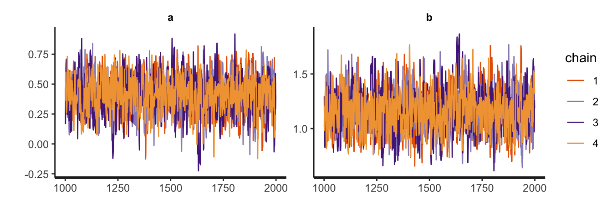

# Load
library(tidyverse)
library(tidybayes)
library(rstan)
library(posterior)
# Drop grid lines
theme_set(
theme_gray() +
theme(panel.grid = element_blank())
)1 The Golem of Prague rstan overview
There’s really nothing in this chapter of the text for us to translate into tidyverse and rstan code. I’m going to repurpose it, instead. Though the chapters and sections in this ebook usually follow those in McElreath’s source text pretty closely, this chapter will be an exception. As I’ve been putting together this ebook, I have settled on a general workflow for fitting models with rstan. In this section, I will briefly introduce the rstan interface for Stan through the lens of that general workflow.
Why here?, you ask. For the sake of this project, I don’t think it works well to wait until Chapter 9 before we properly introduce the basic work flow for rstan. I do explain a lot of the fine points starting in Chapter 4, but that still doesn’t quite get the job done. The way you define and fit models with rstan is sufficiently different from McElreath’s quap() and ulam() functions that it really needs a different kind of introduction, especially for how we format the data (what we call stan_data below), and how we set up the Stan program (what we call model_code below).
To start, load the packages, and remove the default grid lines from the plots.
1.1 We have salamanders data
For this run-through, we’ll be using the salamanders data (Welsh Jr & Lind, 1995) from McElreath’s rethinking package. McElreath introduced these data briefly in the practice questions at the end of Chapter 11.1 As is the custom throughout the text, we’ll save the primary data frame as d.
data(package = "rethinking", salamanders)
d <- salamanders
rm(salamanders)
# What?
glimpse(d)Rows: 47
Columns: 4
$ SITE <int> 1, 2, 3, 4, 5, 6, 7, 8, 9, 10, 11, 12, 13, 14, 15, 16, 17, 1…
$ SALAMAN <int> 13, 11, 11, 9, 8, 7, 6, 6, 5, 5, 4, 3, 3, 3, 3, 3, 2, 2, 2, …
$ PCTCOVER <int> 85, 86, 90, 88, 89, 83, 83, 91, 88, 90, 87, 83, 87, 89, 92, …
$ FORESTAGE <int> 316, 88, 548, 64, 43, 368, 200, 71, 42, 551, 675, 217, 212, …Our focal variable will be SALAMAN, which is the number of salamanders found in 47 different sites in California. Our predictor variable will be PCTCOVER, which is the percentage of ground cover at a given site. Here’s what those two variables look like in a scatter plot.
d |>
ggplot(aes(x = PCTCOVER, y = SALAMAN)) +
geom_point() +
xlim(0, 100)For the code to come, we’ll add two variables to the d data frame. The count variable will be the same as SALAMAN, but just with a simpler name. Following conventions McElreath used throughout the text, the cover_std variable will be a standardized version of PCTCOVER.
d <- d |>
mutate(count = SALAMAN,
cover_std = (PCTCOVER - mean(PCTCOVER)) / sd(PCTCOVER))
# What?
head(d) SITE SALAMAN PCTCOVER FORESTAGE count cover_std
1 1 13 85 316 13 0.7273231
2 2 11 86 88 11 0.7552742
3 3 11 90 548 11 0.8670786
4 4 9 88 64 9 0.8111764
5 5 8 89 43 8 0.8391275
6 6 7 83 368 7 0.6714209Our practice model will follow the equation
\[ \begin{align*} \text{count}_i & \sim \operatorname{Poisson}(\lambda_i) \\ \log(\lambda_i) & = a + b \times \text{cover-std}_i \\ a & \sim \operatorname{Normal}(\log(1), 1) \\ b & \sim \operatorname{Normal}(0, 1), \end{align*} \]
the priors of which I’ve designed as weakly-regularizing on the scale of the data. Since I’m writing this ebook with an experienced readership in mind, I’m assuming it’s okay to start with a Poisson model. For any readers who might be unacquainted with Poisson regression, McElreath covered the basics in Section 11.2.
1.2 Stan likes data in lists
Many model-fitting functions in R allow for a variety of data types, including data frames, lists, free-floating vectors, and so on. Stan expects data in lists, and the primary model-fitting functions in the rstan package expect data lists, too.
The tidybayes package includes a compose_data(), which makes it easy to convert data frames into the list format expected by rstan. We will use the compose_data() function throughout this ebook, and our convention will be to save the output as an object called stan_data. Here’s what this can look like for our salamanders example.
stan_data <- d |>
select(count, cover_std) |>
compose_data()
# What?
str(stan_data)List of 3
$ count : int [1:47(1d)] 13 11 11 9 8 7 6 6 5 5 ...
$ cover_std: num [1:47(1d)] 0.727 0.755 0.867 0.811 0.839 ...
$ n : int 47The compose_data() function automatically added a scalar value n, which defines the number of rows in the original data frame. As we will see, scalar values defining various dimensions are important for the kind of syntax we use with rstan. In some of the models to come, we will even have data lists containing several scalar values.
1.3 model_code and its blocks
Stan programs are organized into a series of program blocks, and those blocks are saved as a character string for the primary rstan functions.2 Following the schematic in the Program Blocks section in the Stan Reference Manual (Stan Development Team, 2024b), those blocks are:
functions {
// ... function declarations and definitions ...
}
data {
// ... declarations ...
}
transformed data {
// ... declarations ... statements ...
}
parameters {
// ... declarations ...
}
transformed parameters {
// ... declarations ... statements ...
}
model {
// ... declarations ... statements ...
}
generated quantities {
// ... declarations ... statements ...
}These blocks must always be in this order, but not all Stan programs need all of the blocks. For example, in our model of the salamanders data, we only need the data, parameters, and model blocks. Here’s what they look like, saved as a character string named model_code.
model_code <- '
data {
int<lower=1> n;
vector[n] cover_std;
array[n] int<lower=0> count;
}
parameters {
real a;
real b;
}
model {
count ~ poisson(exp(a + b * cover_std)); // Likelihood
a ~ normal(log(1), 1); // Priors
b ~ normal(0, 1);
}
'In Stan program blocks, each line ends with a ;. As you can see in the model block, we can annotate the code with // marks. We’ll focus on each of the three program blocks in the subsections below.
1.3.1 Our data block.
Data declarations are a big deal with Stan. We’ll cover a few of the fine points in this section, but the primary information source is the Data Types and Declarations section of the Stan Reference Manual. At some time or another, you’ll want to study that material.
Here’s a focused look at our data block.
data {
int<lower=1> n;
vector[n] cover_std;
array[n] int<lower=0> count;
}All the data required by the model must be declared in the data block.3 One generally defines one variable per line, but it is possible to declare multiple variables in a single line (see here).
It’s important to understand that Stan programs are read in order, top to bottom. Thus the first line in a data block is often used to define any scalar values being used to define dimensions. Recall how earlier we learned the compose_data() function automatically makes an n scalar, which defines the number of rows in the original data set. We will be using that n scalar, and its ilk, a lot in this ebook.
With the syntax of int in this first line, we have declared that n scalar value is a integer. Stan can accept two primitive number types, which are int for integers and real for continuous numbers. There are other special types, such as complex, but I believe we will just be using int and real in this ebook.
Some values have constraints, and by the <lower=1> syntax in our first line, we have declared 1 to be the lowest integer value allowed for our n scalar. Technically, we didn’t need to define this constraint for this example; the model will fit fine without it. In this case, the constraint will serve as a error check to make sure we have a least one case in our data.
By the second line vector[n] cover_std;, we have defined our cover_std predictor values as a vector of length n. In the second line array[n] int<lower=0> count;, we defined our count values as a 1-dimensional array of length n. Stan supports several data types, such as scalars, vectors, matrices, and arrays (see here). Though sequences of real values (such as cover_std) can be declared in vectors or arrays, sequences of integers go into arrays. If you try to declare a sequence of integer values as a vector, Stan will return an error. In my experience, properly juggling vectors and arrays has been a major source of frustration. Stan is picky, friends. Respect the data types.
Note how by int<lower=0>, we declared the count variable is constrained to non-negative integer values. The model would have fit fine without the <lower=0> constraint, but that constraint serves as an error check ensuring none of our salamander counts are out-of bounds values like -1. Don’t try fitting Poisson models with negative counts, friends.
1.3.2 Our parameters block.
A good initial place to learn the technical details for the parameters block is in the Program block: parameters section of the Stan Reference Manual. Otherwise you can glean a lot of applied insights from the Regression Models section of the Stan User’s Guide.
Here’s a focused look at our parameters block.
parameters {
real a;
real b;
}Both our intercept a and slope b have been declared as unconstrained real values. Parameters can have constraints, such as <lower=0> boundaries for \(\sigma\) parameters, and <lower=0, upper=1> boundaries for proportions. Though we don’t have any in this example, you can also declare vectors of parameters, and even matrices. You’ll see many examples of these in the later chapters of the ebook.
Importantly, the parameters declared in the parameters block are the ones sampled by Stan’s HMC sampler.
1.3.3 Our model block.
In the above sections were we detailed the contents of our data and parameters blocks, all of their contents were what are called declarations. We named data elements and model parameters. Whereas model blocks do allow for declarations, they also allow for statements. A great place to learn all about statements is the Statements section of the Stan Reference Manual. You might also read the brief Program block: model section of the Stan Reference Manual, or soak in all the applied examples in the Regression Models section of the Stan User’s Guide. When you’re really ready to get serious, you could browse though pretty much the whole of the Stan Functions Reference (Stan Development Team, 2024a).
Here’s a focused look at our model block.
model {
count ~ poisson(exp(a + b * cover_std)); // Likelihood
a ~ normal(log(1), 1); // Priors
b ~ normal(0, 1);
}My preference is to define the likelihood first, and then add the priors. I’ve seen many examples of the reverse, and sometimes they’re even shuffled all around. You pick whatever convention that makes sense for you and your collaborators, but I do recommend you’re consistent with your choice.
With the syntax of count ~ poisson() in our first line, we have defined the count response variable as Poisson distributed. The sole parameter within the poisson() likelihood is lambda, which we have defined as exp(a + b * cover_std). Note how in our syntax, we explicitly multiplied the b parameter with the cover_std data vector by way of the * operator. Also note that by nesting the linear equation within the exp() function, we have implicitly used the log link.
Throughout this ebook, I will usually use likelihood syntax following this same basic format. But it’s important to understand there are many other options. For example, some people might prefer for loops to our vectorized code. That could look like this:
model {
for (i in 1:n) count[i] ~ poisson(exp(a + b * cover_std[i])); // This is new
a ~ normal(log(1), 1); // These two lines are still the same
b ~ normal(0, 1);
}Not all functions in Stan are vectorized, but I believe all can be used in the context of a loop. As we will see in the ebook, a few of the likelihoods currently require a for loop. But generally speaking, vectorized code tends to run faster in Stan than code with for loops. It’s good to know both, but when possible, I always prefer vectorized code.
Sometimes Stan provides variants of popular likelihood functions that are parameterized in terms of their typical link functions. In this case, we could have used the poisson_log() function, which obviates the need for nesting the linear model within the exp() function. That would look like this:
model {
count ~ poisson_log(a + b * cover_std); // This is the only line that changed
a ~ normal(log(1), 1);
b ~ normal(0, 1);
}I’m not currently in the habit of running models with this style of syntax. If you fit the model both ways, you’ll see the overall results are very similar. However, in this case the poisson_log() version was a little faster, and it had slightly better HMC chain diagnostics by way of the \(\widehat R\) and effective sample size estimates.
There are even other functions that follow the so-called generalized linear model specification, such as the poisson_log_glm() function (see here). At the moment, I do not have experience with this class of functions. Perhaps I’ll give them some study and coverage in the future.
Anyway, you’ll note that our prior lines follow a similar kind of syntax as our likelihood line for the count variable. Each prior line started with the parameter of interest on the left side, followed by the tilde ~, and then concluded with a distribution. With the prior for a, you’ll notice it is legal to insert functions like log() into the hyperparameters. Though not shown here, it is also possible to assign vectors of parameters to a common prior, which we will see in some of the examples in the ebook (e.g., see Section 5.3.2).
There are many many other fine points we could discuss here about the model block, but I think this is a fine place to stop for our basic introduction. We have the rest of the ebook for the details.
1.4 HMC sampling with rstan
To my eye, there are two basic ways to draw posterior samples from rstan. We’ll cover both.
1.4.1 Primary method: Just use stan().
The first method for fitting rstan models, and the primary method we’ll be using in this ebook, is with the stan() function. For us, the two main arguments are the data argument, into which we insert our stan_data, and the model_code argument, into which we insert our model_code with its data, parameters, and model block information. There are a whole slew of other arguments with default settings you might want to change. For example, stan() automatically samples from four HMC chains by the default setting chains = 4, which I generally find reasonable. Though it by default samples from the four chains in sequence, we will instead sample from them in parallel by setting cores = 4. To make the results more reproducible, I will also set seed = 1.
m1.1 <- stan(
# These two lines are necessary for us
data = stan_data,
model_code = model_code,
# These settings are optional
cores = 4, seed = 1)Following the conventions McElreath used throughout the text, we have saved the model fit object as m1.1, where the m prefix stands for fitted model, the first numeral index indicates we are in the first chapter, and the second numerical index indicated this if the first model we have fit within this chapter. You can name your model fits whatever you want.
1.4.2 Secondary method: Use stan_model() and sampling().
The second method splits the model fitting process into two steps. We use the stan_model() function to translate the code in our model_code object into C++, and then that C++ code is compiled into a so-called dynamic shared object (DSO), which is then loaded. Though there are many arguments within the stan_model() function, the only one required by us is model_code. Following some of McElreath’s naming conventions, we’ll save the results as dso1.1.
dso1.1 <- stan_model(model_code = model_code)The resulting object is of S4 class stanmodel.
class(dso1.1)[1] "stanmodel"
attr(,"package")
[1] "rstan"Our dso1.1 object does not contain HMC samples. We compute those in the next step with the sampling() function. Here we assign our dso1.1 to the object argument, and assign our stan_data to the data argument. As with the stan() function above, we are at liberty to adjust the various technical settings, such as with the cores and seed arguments. I’ll save the output as samp1.1.
samp1.1 <- sampling(
object = dso1.1,
data = stan_data,
cores = 4, seed = 1) 1.4.3 Compare the two methods by output.
We might compare the structures of our m1.1 and samp1.1 objects with str().
str(m1.1, max.level = 2)Formal class 'stanfit' [package "rstan"] with 10 slots
..@ model_name: chr "anon_model"
..@ model_pars: chr [1:3] "a" "b" "lp__"
..@ par_dims :List of 3
..@ mode : int 0
..@ sim :List of 12
..@ inits :List of 4
..@ stan_args :List of 4
..@ stanmodel :Formal class 'stanmodel' [package "rstan"] with 5 slots
..@ date : chr "Mon Sep 9 21:51:11 2024"
..@ .MISC :<environment: 0x157de2a30> str(samp1.1, max.level = 2)Formal class 'stanfit' [package "rstan"] with 10 slots
..@ model_name: chr "anon_model"
..@ model_pars: chr [1:3] "a" "b" "lp__"
..@ par_dims :List of 3
..@ mode : int 0
..@ sim :List of 12
..@ inits :List of 4
..@ stan_args :List of 4
..@ stanmodel :Formal class 'stanmodel' [package "rstan"] with 5 slots
..@ date : chr "Tue Sep 10 09:50:46 2024"
..@ .MISC :<environment: 0x155fc2eb8> They look about the same. But do they contain the same posterior draws? We can extract the posterior draws from both with the posterior::as_draws_df() function. If we nest that output within the all.equal() function, we can test whether the output is identical.
all.equal(
as_draws_df(m1.1),
as_draws_df(samp1.1)
)[1] TRUEYep, it is. Both methods returned the exact same HMC draws. Which method is better?, you say. Well, I generally prefer the 1-step stan() method, and that’s the method I use the most. But the 2-step stan_model()-to-sampling() method has its strengths. We’ll see examples of this in Section 5.1.4.1 and Section 7.2.5. As the careful reader will see, there are even tricky ways to combine the two methods.
1.5 Evaluate the posteior draws
We can use the good-old print() function for a quick summary of the posterior.
print(m1.1)Inference for Stan model: anon_model.
4 chains, each with iter=2000; warmup=1000; thin=1;
post-warmup draws per chain=1000, total post-warmup draws=4000.
mean se_mean sd 2.5% 25% 50% 75% 97.5% n_eff Rhat
a 0.42 0.00 0.16 0.10 0.31 0.43 0.53 0.71 1249 1.00
b 1.16 0.01 0.19 0.81 1.03 1.15 1.28 1.55 1306 1.00
lp__ 21.47 0.03 1.03 18.61 21.08 21.79 22.21 22.48 1138 1.01
Samples were drawn using NUTS(diag_e) at Mon Sep 9 21:51:11 2024.
For each parameter, n_eff is a crude measure of effective sample size,
and Rhat is the potential scale reduction factor on split chains (at
convergence, Rhat=1).There are various ways to customize this output, and you’ll see I often use the pars and probs arguments throughout the text.
Note how the print() output includes the se_mean, n_eff, and Rhat columns for basic numeric summaries of the quality of the HMC draws. If you require more detail and greater customization, consider the summarise_draws() function from the posterior package. Here’s what that looks like with its default_convergence_measures() helper function.
summarise_draws(m1.1, default_convergence_measures())# A tibble: 3 × 4
variable rhat ess_bulk ess_tail
<chr> <dbl> <dbl> <dbl>
1 a 1.01 1281. 1251.
2 b 1.00 1326. 1324.
3 lp__ 1.00 1332. 1720.rstan also has a check_hmc_diagnostics() function for checking the kinds of scary warning messages McElreath started discussing in Chapter 9. For our little m1.1 model, all is good.
check_hmc_diagnostics(m1.1)
Divergences:0 of 4000 iterations ended with a divergence.
Tree depth:0 of 4000 iterations saturated the maximum tree depth of 10.
Energy:E-BFMI indicated no pathological behavior.The rstan package comes with several built-in plotting functions. You can make trace plots with stan_trace(), and overlaid density plots with stan_dens().
stan_trace(m1.1)
stan_dens(m1.1, separate_chains = TRUE, linewidth = 0.1)There are several other stan_*() functions for other kinds of plots, such as stan_plot() and stan_ac(). These all return ggplot2 objects, which can be modified with the usual functions like theme(), labs(), and so on. For a general overview, execute ?stan_plot in your console.
There’s also a rogue traceplot() function that returns the same output as stan_trace(). I don’t know what the deal is with that, but my best guess is traceplot() was around before the rstan team added in the ggplot2-based plots, and they’ve just kept the function name to keep someone’s old code from breaking. If anyone knows the actual history, do share in the comments.
There are many ways to pull the HMC draws from an rstan model. The extract() method is perhaps the most native way for the rstan package, but I generally don’t care for it as its output format is either a list or an array. I prefer data frames, and there are two tidy methods I like and use throughout the book. The first is with the as_draws_df() function from the posterior package, which we briefly saw above. Here’s a closer look at the output.
as_draws_df(m1.1) |>
glimpse()Rows: 4,000
Columns: 6
$ a <dbl> 0.4690231, 0.3492415, 0.4594558, 0.5174115, 0.3501242, 0.53…
$ b <dbl> 1.0143687, 1.2250167, 1.1399251, 1.1331068, 1.0995957, 0.90…
$ lp__ <dbl> 22.15741, 22.31395, 22.47892, 22.17630, 21.75354, 21.50968,…
$ .chain <int> 1, 1, 1, 1, 1, 1, 1, 1, 1, 1, 1, 1, 1, 1, 1, 1, 1, 1, 1, 1,…
$ .iteration <int> 1, 2, 3, 4, 5, 6, 7, 8, 9, 10, 11, 12, 13, 14, 15, 16, 17, …
$ .draw <int> 1, 2, 3, 4, 5, 6, 7, 8, 9, 10, 11, 12, 13, 14, 15, 16, 17, …You get a data frame in the wide format where each parameter has its own column, each row is one of the HMC draws, and there are three index variables called .chain, .iteration, and .draw. The as_draws_df() function returns a special kind of data frame, which is also of class draws_df and draws. To learn more, execute ?as_draws_df in your console.
To give you a sense of how it works in action, here’s an as_draws_df()-based way to plot the fitted line against the sample data.
as_draws_df(m1.1) |>
expand_grid(cover_std = seq(from = -1.7, to = 1.5, length.out = 201)) |>
mutate(PCTCOVER = cover_std * sd(d$PCTCOVER) + mean(d$PCTCOVER),
y_hat = exp(a + b * cover_std)) |>
filter(PCTCOVER >= 0 & PCTCOVER <= 100) |>
ggplot(aes(x = PCTCOVER)) +
stat_lineribbon(aes(y = y_hat),
.width = 0.89,
color = "blue", fill = alpha("blue", 1/3), linewidth = 1) +
geom_point(data = d,
aes(y = count)) +
labs(x = "% ground coverage per site",
y = "salamander count")
The other way I like to extract the rstan-based HMC draws is with the sister functions gather_draws() and spread_draws() from the tidybayes package. Here’s what their output looks like for m1.1.
gather_draws(m1.1, a, b) |>
glimpse()Rows: 8,000
Columns: 5
Groups: .variable [2]
$ .chain <int> 1, 1, 1, 1, 1, 1, 1, 1, 1, 1, 1, 1, 1, 1, 1, 1, 1, 1, 1, 1,…
$ .iteration <int> 1, 2, 3, 4, 5, 6, 7, 8, 9, 10, 11, 12, 13, 14, 15, 16, 17, …
$ .draw <int> 1, 2, 3, 4, 5, 6, 7, 8, 9, 10, 11, 12, 13, 14, 15, 16, 17, …
$ .variable <chr> "a", "a", "a", "a", "a", "a", "a", "a", "a", "a", "a", "a",…
$ .value <dbl> 0.4690231, 0.3492415, 0.4594558, 0.5174115, 0.3501242, 0.53…spread_draws(m1.1, a, b) |>
glimpse()Rows: 4,000
Columns: 5
$ .chain <int> 1, 1, 1, 1, 1, 1, 1, 1, 1, 1, 1, 1, 1, 1, 1, 1, 1, 1, 1, 1,…
$ .iteration <int> 1, 2, 3, 4, 5, 6, 7, 8, 9, 10, 11, 12, 13, 14, 15, 16, 17, …
$ .draw <int> 1, 2, 3, 4, 5, 6, 7, 8, 9, 10, 11, 12, 13, 14, 15, 16, 17, …
$ a <dbl> 0.4690231, 0.3492415, 0.4594558, 0.5174115, 0.3501242, 0.53…
$ b <dbl> 1.0143687, 1.2250167, 1.1399251, 1.1331068, 1.0995957, 0.90…Both return data frames with those .chain, .iteration, and .draw index variables. Whereas gather_draws() returned a long format with respect to our focal parameters a and b, spread_draws() returned them in a wide format. With a simple model like m1.1, these two functions don’t really shine. But they tend to work very nicely once we have models with vectors of parameters, such as showcased in Section 5.3.2, Section 11.1.1, and Section 13.1.
Here’s an example of how the long gather_draws() output makes it easy to showcase both the parameters in a faceted half-eye plot.
gather_draws(m1.1, a, b) |>
ggplot(aes(x = .value)) +
stat_halfeye(.width = 0.89, fill = alpha("blue", 1/2), linewidth = 1, shape = 1) +
scale_y_continuous(NULL, breaks = NULL) +
xlab("parameter space") +
facet_wrap(~ .variable, scales = "free")For now, I think this should be enough to get you moving with rstan. We have the rest of the ebook to fill in the details and chase down endless tangents. Happy modeling, friends.
Session info
At the end of every chapter, I use the sessionInfo() function to help make my results more reproducible.
sessionInfo()R version 4.4.0 (2024-04-24)
Platform: aarch64-apple-darwin20
Running under: macOS Ventura 13.4
Matrix products: default
BLAS: /Library/Frameworks/R.framework/Versions/4.4-arm64/Resources/lib/libRblas.0.dylib
LAPACK: /Library/Frameworks/R.framework/Versions/4.4-arm64/Resources/lib/libRlapack.dylib; LAPACK version 3.12.0
locale:
[1] en_US.UTF-8/en_US.UTF-8/en_US.UTF-8/C/en_US.UTF-8/en_US.UTF-8
time zone: America/Chicago
tzcode source: internal
attached base packages:
[1] stats graphics grDevices utils datasets methods base
other attached packages:
[1] posterior_1.6.0 rstan_2.32.6 StanHeaders_2.32.7 tidybayes_3.0.6
[5] lubridate_1.9.3 forcats_1.0.0 stringr_1.5.1 dplyr_1.1.4
[9] purrr_1.0.2 readr_2.1.5 tidyr_1.3.1 tibble_3.2.1
[13] ggplot2_3.5.1 tidyverse_2.0.0
loaded via a namespace (and not attached):
[1] gtable_0.3.5 tensorA_0.36.2.1 xfun_0.43
[4] QuickJSR_1.1.3 htmlwidgets_1.6.4 inline_0.3.19
[7] lattice_0.22-6 tzdb_0.4.0 vctrs_0.6.5
[10] tools_4.4.0 generics_0.1.3 stats4_4.4.0
[13] curl_5.2.1 parallel_4.4.0 fansi_1.0.6
[16] pkgconfig_2.0.3 Matrix_1.7-0 checkmate_2.3.1
[19] distributional_0.4.0 RcppParallel_5.1.7 lifecycle_1.0.4
[22] farver_2.1.1 compiler_4.4.0 munsell_0.5.1
[25] codetools_0.2-20 htmltools_0.5.8.1 yaml_2.3.8
[28] pillar_1.9.0 arrayhelpers_1.1-0 abind_1.4-5
[31] tidyselect_1.2.1 digest_0.6.35 svUnit_1.0.6
[34] stringi_1.8.4 labeling_0.4.3 fastmap_1.1.1
[37] grid_4.4.0 colorspace_2.1-0 cli_3.6.3
[40] magrittr_2.0.3 loo_2.8.0 pkgbuild_1.4.4
[43] utf8_1.2.4 withr_3.0.0 scales_1.3.0
[46] backports_1.5.0 timechange_0.3.0 rmarkdown_2.26
[49] matrixStats_1.3.0 gridExtra_2.3 hms_1.1.3
[52] coda_0.19-4.1 evaluate_0.23 knitr_1.46
[55] V8_4.4.2 ggdist_3.3.2 viridisLite_0.4.2
[58] rlang_1.1.4 Rcpp_1.0.12 glue_1.7.0
[61] rstudioapi_0.16.0 jsonlite_1.8.8 R6_2.5.1 Keep in mind I do not cover practice questions in my ebooks.↩︎
Technically, there are other ways to save the blocks, such as external files. In this ebook, we will always save them as character strings.↩︎
A possible exception is if you define a transformed version of any of your data in the
transformed datablock. However, I do not plan on using thetransformed dataapproach in this ebook.↩︎
Comments